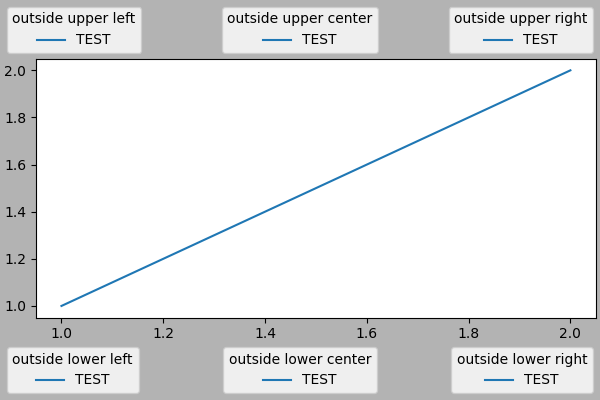
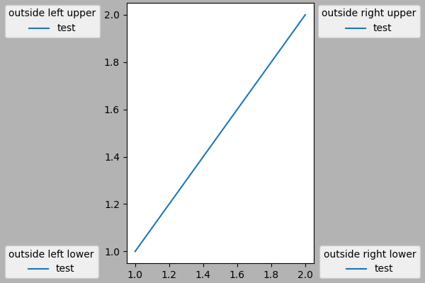

Note
Go to the end to download the full example code.
Legend guide#
This legend guide extends the legend docstring -
please read it before proceeding with this guide.
This guide makes use of some common terms, which are documented here for clarity:
- legend entry#
A legend is made up of one or more legend entries. An entry is made up of exactly one key and one label.
- legend key#
The colored/patterned marker to the left of each legend label.
- legend label#
The text which describes the handle represented by the key.
- legend handle#
The original object which is used to generate an appropriate entry in the legend.
Controlling the legend entries#
Calling legend() with no arguments automatically fetches the legend
handles and their associated labels. This functionality is equivalent to:
The get_legend_handles_labels() function returns
a list of handles/artists which exist on the Axes which can be used to
generate entries for the resulting legend - it is worth noting however that
not all artists can be added to a legend, at which point a "proxy" will have
to be created (see Creating artists specifically for adding to the legend (aka. Proxy artists) for further details).
Note
Artists with an empty string as label or with a label starting with an underscore, "_", will be ignored.
For full control of what is being added to the legend, it is common to pass
the appropriate handles directly to legend():
Renaming legend entries#
When the labels cannot directly be set on the handles, they can be directly passed to
Axes.legend:
If the handles are not directly accessible, for example when using some
Third-party packages, they can be accessed
via Axes.get_legend_handles_labels. Here we use a dictionary to rename existing
labels:
Creating artists specifically for adding to the legend (aka. Proxy artists)#
Not all handles can be turned into legend entries automatically, so it is often necessary to create an artist which can. Legend handles don't have to exist on the Figure or Axes in order to be used.
Suppose we wanted to create a legend which has an entry for some data which is represented by a red color:
import matplotlib.pyplot as plt
import matplotlib.patches as mpatches
fig, ax = plt.subplots()
red_patch = mpatches.Patch(color='red', label='The red data')
ax.legend(handles=[red_patch])
plt.show()
There are many supported legend handles. Instead of creating a patch of color we could have created a line with a marker:
import matplotlib.lines as mlines
fig, ax = plt.subplots()
blue_line = mlines.Line2D([], [], color='blue', marker='*',
markersize=15, label='Blue stars')
ax.legend(handles=[blue_line])
plt.show()
Legend location#
The location of the legend can be specified by the keyword argument
loc. Please see the documentation at legend() for more details.
The bbox_to_anchor keyword gives a great degree of control for manual
legend placement. For example, if you want your Axes legend located at the
figure's top right-hand corner instead of the Axes' corner, simply specify
the corner's location and the coordinate system of that location:
More examples of custom legend placement:
fig, ax_dict = plt.subplot_mosaic([['top', 'top'], ['bottom', 'BLANK']],
empty_sentinel="BLANK")
ax_dict['top'].plot([1, 2, 3], label="test1")
ax_dict['top'].plot([3, 2, 1], label="test2")
# Place a legend above this subplot, expanding itself to
# fully use the given bounding box.
ax_dict['top'].legend(bbox_to_anchor=(0., 1.02, 1., .102), loc='lower left',
ncols=2, mode="expand", borderaxespad=0.)
ax_dict['bottom'].plot([1, 2, 3], label="test1")
ax_dict['bottom'].plot([3, 2, 1], label="test2")
# Place a legend to the right of this smaller subplot.
ax_dict['bottom'].legend(bbox_to_anchor=(1.05, 1),
loc='upper left', borderaxespad=0.)
Figure legends#
Sometimes it makes more sense to place a legend relative to the (sub)figure rather than individual Axes. By using constrained layout and specifying "outside" at the beginning of the loc keyword argument, the legend is drawn outside the Axes on the (sub)figure.
fig, axs = plt.subplot_mosaic([['left', 'right']], layout='constrained')
axs['left'].plot([1, 2, 3], label="test1")
axs['left'].plot([3, 2, 1], label="test2")
axs['right'].plot([1, 2, 3], 'C2', label="test3")
axs['right'].plot([3, 2, 1], 'C3', label="test4")
# Place a legend to the right of this smaller subplot.
fig.legend(loc='outside upper right')
This accepts a slightly different grammar than the normal loc keyword, where "outside right upper" is different from "outside upper right".
ucl = ['upper', 'center', 'lower']
lcr = ['left', 'center', 'right']
fig, ax = plt.subplots(figsize=(6, 4), layout='constrained', facecolor='0.7')
ax.plot([1, 2], [1, 2], label='TEST')
# Place a legend to the right of this smaller subplot.
for loc in [
'outside upper left',
'outside upper center',
'outside upper right',
'outside lower left',
'outside lower center',
'outside lower right']:
fig.legend(loc=loc, title=loc)
fig, ax = plt.subplots(figsize=(6, 4), layout='constrained', facecolor='0.7')
ax.plot([1, 2], [1, 2], label='test')
for loc in [
'outside left upper',
'outside right upper',
'outside left lower',
'outside right lower']:
fig.legend(loc=loc, title=loc)
- 
- 
Multiple legends on the same Axes#
Sometimes it is more clear to split legend entries across multiple
legends. Whilst the instinctive approach to doing this might be to call
the legend() function multiple times, you will find that only one
legend ever exists on the Axes. This has been done so that it is possible
to call legend() repeatedly to update the legend to the latest
handles on the Axes. To keep old legend instances, we must add them
manually to the Axes:
fig, ax = plt.subplots()
line1, = ax.plot([1, 2, 3], label="Line 1", linestyle='--')
line2, = ax.plot([3, 2, 1], label="Line 2", linewidth=4)
# Create a legend for the first line.
first_legend = ax.legend(handles=[line1], loc='upper right')
# Add the legend manually to the Axes.
ax.add_artist(first_legend)
# Create another legend for the second line.
ax.legend(handles=[line2], loc='lower right')
plt.show()
Legend handlers#
In order to create legend entries, handles are given as an argument to an
appropriate HandlerBase subclass.
The choice of handler subclass is determined by the following rules:
Update
get_legend_handler_map()with the value in thehandler_mapkeyword.Check if the
handleis in the newly createdhandler_map.Check if the type of
handleis in the newly createdhandler_map.Check if any of the types in the
handle's mro is in the newly createdhandler_map.
For completeness, this logic is mostly implemented in
get_legend_handler().
All of this flexibility means that we have the necessary hooks to implement custom handlers for our own type of legend key.
The simplest example of using custom handlers is to instantiate one of the
existing legend_handler.HandlerBase subclasses. For the
sake of simplicity, let's choose legend_handler.HandlerLine2D
which accepts a numpoints argument (numpoints is also a keyword
on the legend() function for convenience). We can then pass the mapping
of instance to Handler as a keyword to legend.
from matplotlib.legend_handler import HandlerLine2D
fig, ax = plt.subplots()
line1, = ax.plot([3, 2, 1], marker='o', label='Line 1')
line2, = ax.plot([1, 2, 3], marker='o', label='Line 2')
ax.legend(handler_map={line1: HandlerLine2D(numpoints=4)}, handlelength=4)
As you can see, "Line 1" now has 4 marker points, where "Line 2" has 2 (the
default). We have also increased the length of the handles with the
handlelength keyword to fit the larger legend entry.
Try the above code, only change the map's key from line1 to
type(line1). Notice how now both Line2D instances get 4 markers.
Along with handlers for complex plot types such as errorbars, stem plots
and histograms, the default handler_map has a special tuple handler
(legend_handler.HandlerTuple) which simply plots the handles on top of one
another for each item in the given tuple. The following example demonstrates
combining two legend keys on top of one another:
The legend_handler.HandlerTuple class can also be used to
assign several legend keys to the same entry:
from matplotlib.legend_handler import HandlerLine2D, HandlerTuple
fig, ax = plt.subplots()
p1, = ax.plot([1, 2.5, 3], 'r-d')
p2, = ax.plot([3, 2, 1], 'k-o')
l = ax.legend([(p1, p2)], ['Two keys'], numpoints=1,
handler_map={tuple: HandlerTuple(ndivide=None)})
Implementing a custom legend handler#
A custom handler can be implemented to turn any handle into a legend key
(handles don't necessarily need to be matplotlib artists). The handler must
implement a legend_artist method which returns a single artist for the
legend to use. The required signature for legend_artist is documented at
legend_artist.
import matplotlib.patches as mpatches
class AnyObject:
pass
class AnyObjectHandler:
def legend_artist(self, legend, orig_handle, fontsize, handlebox):
x0, y0 = handlebox.xdescent, handlebox.ydescent
width, height = handlebox.width, handlebox.height
patch = mpatches.Rectangle([x0, y0], width, height, facecolor='red',
edgecolor='black', hatch='xx', lw=3,
transform=handlebox.get_transform())
handlebox.add_artist(patch)
return patch
fig, ax = plt.subplots()
ax.legend([AnyObject()], ['My first handler'],
handler_map={AnyObject: AnyObjectHandler()})
Alternatively, had we wanted to globally accept AnyObject instances
without needing to manually set the handler_map keyword all the time, we
could have registered the new handler with:
from matplotlib.legend import Legend
Legend.update_default_handler_map({AnyObject: AnyObjectHandler()})
Whilst the power here is clear, remember that there are already many handlers implemented and what you want to achieve may already be easily possible with existing classes. For example, to produce elliptical legend keys, rather than rectangular ones:
from matplotlib.legend_handler import HandlerPatch
class HandlerEllipse(HandlerPatch):
def create_artists(self, legend, orig_handle,
xdescent, ydescent, width, height, fontsize, trans):
center = 0.5 * width - 0.5 * xdescent, 0.5 * height - 0.5 * ydescent
p = mpatches.Ellipse(xy=center, width=width + xdescent,
height=height + ydescent)
self.update_prop(p, orig_handle, legend)
p.set_transform(trans)
return [p]
c = mpatches.Circle((0.5, 0.5), 0.25, facecolor="green",
edgecolor="red", linewidth=3)
fig, ax = plt.subplots()
ax.add_patch(c)
ax.legend([c], ["An ellipse, not a rectangle"],
handler_map={mpatches.Circle: HandlerEllipse()})
Total running time of the script: (0 minutes 9.907 seconds)